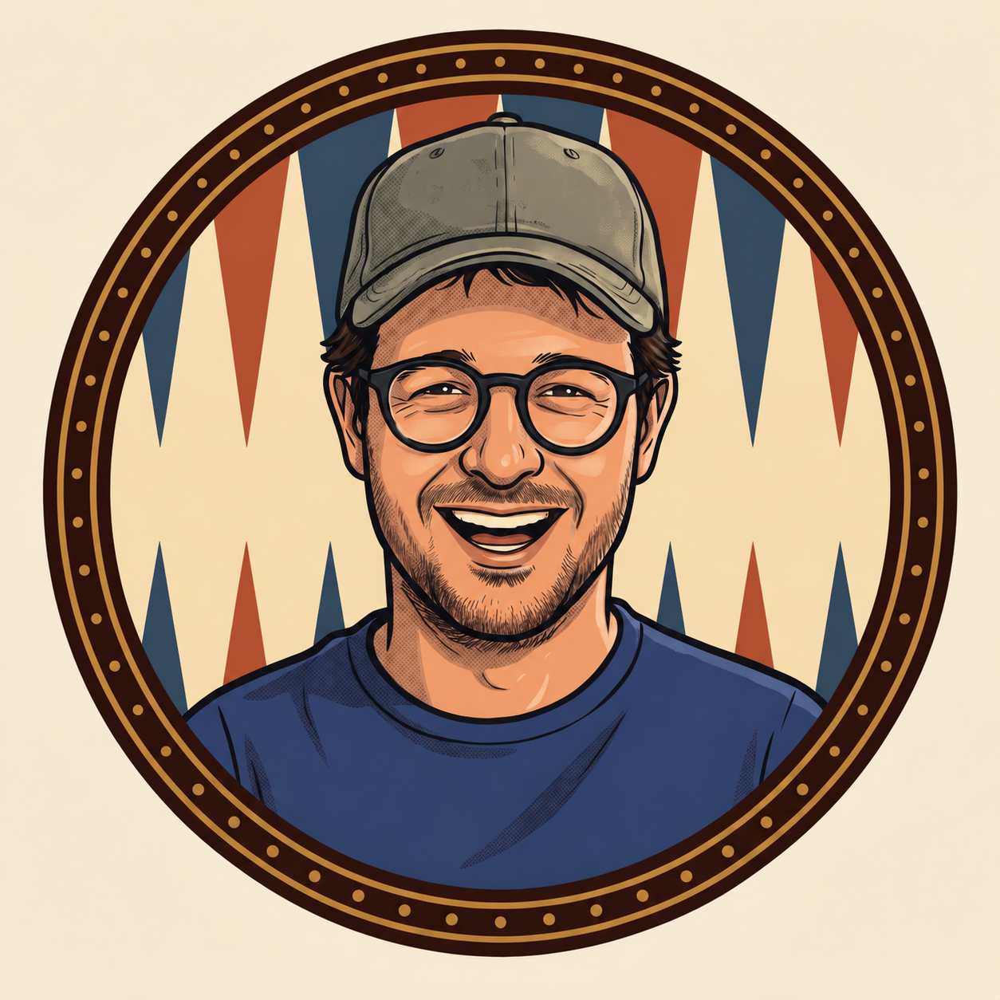

Bryce’s badge — background preview
Compare the triangle colours in the original and proposed version. This background style has been approved for the website’s member badges.


Compare the triangle colours in the original and proposed version. This background style has been approved for the website’s member badges.
